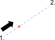

- След като активирате този инструмент за прихващане, изберете
"Разстояние", "Процент" или "Дроб" и въведете желаната стойност в лентата с
опции.

- Посочете първата точка. Това е точката, от която се измерва
разстоянието.
- Щракнете върху втората точка.
